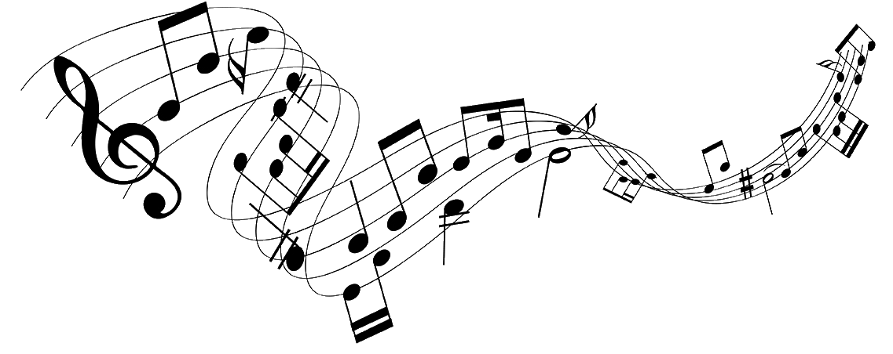
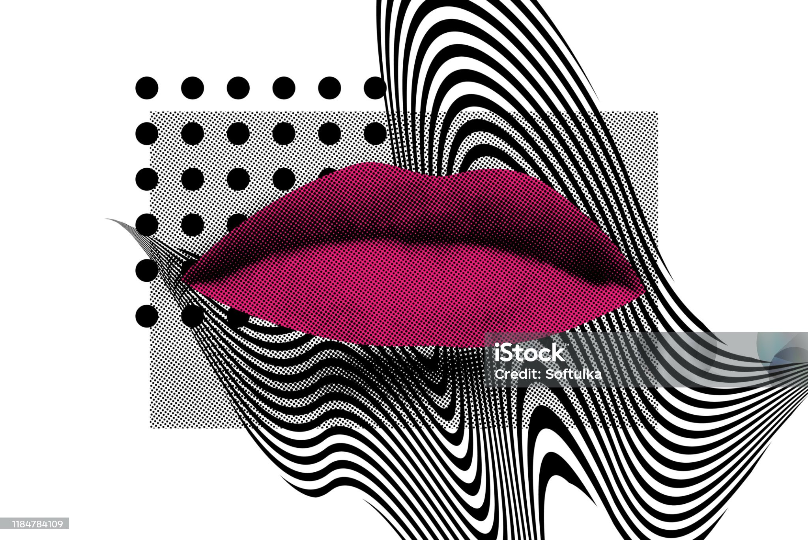

S-Music
Explora cómo la música ha cambiado con el tiempo, influenciando generaciones, estilos y emociones.
Explorar
Bienvenido a S-Music
Los géneros musicales han cambiado drásticamente: lo que antes era popular, como los boleros o el jazz clásico, dio paso a nuevas corrientes como el rock, el pop, el reguetón o la música electrónica. Aquí encontraras algo de esta historia, su evolución, sus mejores épocas y como la música actual ha sido influenciada por todos estos ritmos que desde la antiguedad han marcado pautas que nunca pasaran de moda
